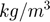

genmt_vel1d
Generate synthetic event/phase data for focimt in 1D velocity model ASCII format
Contents
Syntax
genmt_vel1d(STRIKE, DIP, RAKE) genmt_vel1d(STRIKE, DIP, RAKE, TENSILE_ANGLE) genmt_vel1d(STRIKE, DIP, RAKE, ...)
Description
% Use |genmt_vel1d| to generate a synthetic amplitude data for the purpose of % seismic moment inversion with focimt. The point source is assumed and the % radiation formula of shear-tensile source model are used to calculate the % expected amplitudes of first P-wave phase located at certain AZIMUTH and % TAKEOFF angle from the source.
genmt_vel1d(STRIKE, DIP, RAKE) generates synthetic event and phase data for double-couple event(s) with focal mechanism(s) specified by STRIKE, DIP and RAKE vectors. The input vectors must be of the same size and the provided angles must follow standard seismological convention with respect to fault plane parameters.
genmt_vel1d(STRIKE, DIP, RAKE, TENSILE_ANGLE) allows to specify the tensile angle for every fault plane [see refs 1,2,3 for details]. The negative tensile angles correspond to shear-compaction (with -90 degrees corresponding to MODE-I closing) whereas posivitive angles correspond to shear-opening (with +90 degrees corresponds to MODE-I opening). The tensile angle 0 degrees correspond to pure shear motion.
genmt_vel1d(STRIKE, DIP, RAKE, ...) allows to specify additional parameters in a form of '_ParamName_', ParamValue pairs.
Parameters
Density - Rock density in hypocenter
2700 (default) | positive scalar value
Density of rocks in the source in . This value is used to calculate actual ground motions at a certain distance from the source.
Easting - Locations of stations
meshgrid(-10000:5000:10000) | floating point matrix
Allows to specify the Easting components of recording station locations in local Cartesian coordinate system. The stations are by default located at the surface (altitude = 0m). The values are provided in meters.
EventDepth - Hypocentral depth
1500 | positive scalar value
Allows to specify hypocenter depth (in meters, measured from the Earth surface). The epicentral location is fixed to Northing = 0 m and Easting = 0 m.
FileFormat - Output format file
'vel1d' | 'raw'
Allows to determine the output file format. By default, the synthetic phase data are saves in 1D velocity model ASCII format. However, it is also possible to generate the output file in RAW format, similarly to the one that can be generated using genmt_raw routine.
FileName - Output file name
'default.txt' | string
Allows to specify output file name.
MomentMagnitude - Moment magnitude
pi | positive scalar
Allows to specify the moment magnitude of generated synthetic earthquakes.
Northing - Locations of stations
meshgrid(-10000:5000:10000) | floating point matrix
Allows to specify the Northing components of recording station locations in local Cartesian coordinate system. The stations are by default located at the surface (altitude = 0m). The values are provided in meters.
PickLost - Pick ratio
0.0 | scalar value 0.0-1.0
The percentage of phase data that will be removed from randomly generated input dataset.
PoissonRatio - Poisson's ratio
0.25 | positive scalar value
The Poisson's ratio of rocks in the hypocentral area.
StationBias - Station bias factor(s)
empty matrix | n-by-2 matrix
Allows to apply constant gain factors to particular station or stations. The parameter value is n-by-2 matrix where elements in first column correspond to index of stations and elements in second column determine their corresponding gains. This parameter may be used to simulate a persistent bias in amplitude readings at particular station or stations including polarity switch.
VelocityModel - P-wave velocity model
[0.00 3.00 8.00 20.00 22.00; 4.10 5.47 5.75 6.02 7.90]' | n-by-2 matrix
Allows to specify P-wave velocity velocity model for 1D ray-tracing routine. The elements in the first column and the second column correspond the tops of layers (km) and P-wave velocities (km/s), respectively.
Examples
The following example will generate synthetic phase data for two events using two different ASCII formats readable by focimt application:
n = 2; STRIKE = round(rand(1,n) * 359); DIP = round(rand(1,n) * 90); RAKE = round(rand(1,n) * 360 - 180); ALPHA = round(rand(1,n) * 40 - 20); genmt_vel1d(STRIKE,DIP,RAKE,ALPHA,'FileName','example2_1d.txt'); genmt_vel1d(STRIKE,DIP,RAKE,ALPHA,'FileName','example2_raw.txt','FileFormat','raw');
Warning: File 'input.txt' not found. Warning: File 'output.txt' not found. Warning: File 'input.txt' not found. Warning: File 'output.txt' not found.
See also
References
[1] Kwiatek, G. and Y. Ben-Zion (2013). Assessment of P and S wave energy radiated from very small shear-tensile seismic events in a deep South African mine. J. Geophys. Res. 118, 3630-3641, doi: 10.1002/jgrb.50274
[2] Ou, G.-B., 2008, Seismological Studies for Tensile Faults. Terrestrial, Atmospheric and Oceanic Sciences 19, 463.
[3] Vavryčuk, V., 2001. Inversion for parameters of tensile earthquakes.” J. Geophys. Res. 106 (B8): 16339–16355. doi: 10.1029/2001JB000372.